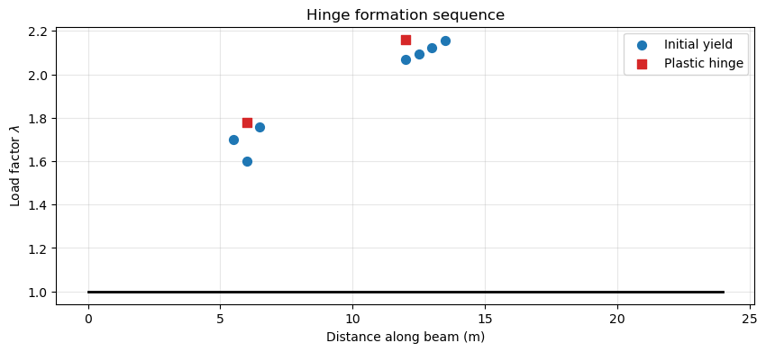
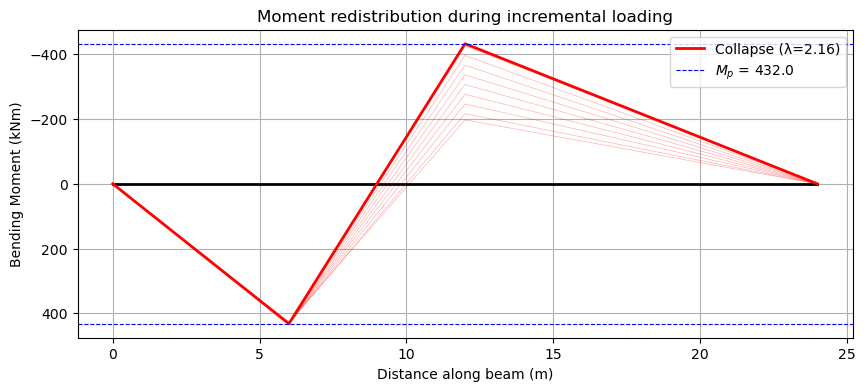
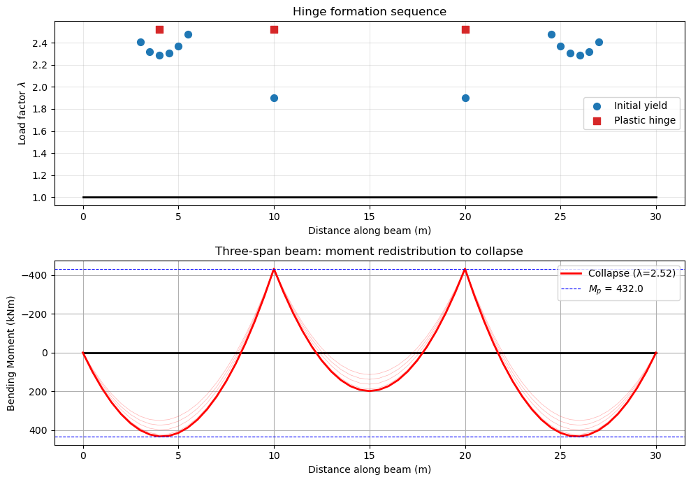
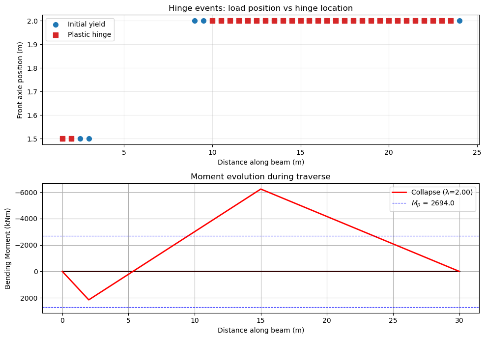
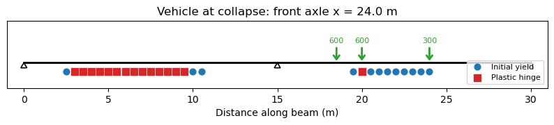

Nonlinear Beam Analysis#
PyCBA includes an incremental nonlinear analysis capability based on the Generalized Clough model for concentrated plasticity. This allows the formation and tracking of plastic hinges in continuous beams up to collapse.
For the full theoretical background — the \(R\)-parameter degradation law, element stiffness interpolation, hinge ownership, incremental algorithm, moving load transfer, and collapse detection — see the Theoretical Basis page.
Note — Nonlinear analysis supports prismatic (constant-\(EI\)) members only. The Generalized Clough element assumes a constant \(EI\) per element, so passing a SectionEI (non-prismatic) member to NonlinearBeamAnalysis raises a TypeError. For variable-\(EI\) members use the linear BeamAnalysis — see the Non-prismatic Elements tutorial.
[1]:
import pycba as cba
import numpy as np
import matplotlib.pyplot as plt
Example 1 — Point Load at Midspan (Validation)#
We validate against a closed-form plastic analysis result.
A two-span continuous beam (two equal spans of \(L = 12\) m, three pin supports) is loaded with a single point load \(P = 100\) kN at the midspan of span 1 (\(x = 6\) m).
Section properties:
\(M_p = 432\) kNm, \(M_y = 376\) kNm, \(EI = 67{,}035\) kNm\(^2\)
Collapse load factor from virtual work:
The collapse mechanism has hinges at midspan (\(x = L/2\)) and at the interior support (\(x = L\)). Let the left part rotate \(\theta\):
Deflection at midspan: \(\delta = (L/2)\,\theta\)
Right part of span 1 also rotates \(\theta\) (by geometry)
Midspan hinge rotation: \(2\theta\). Support hinge rotation: \(\theta\).
Internal work: \(W_i = M_p \cdot 2\theta + M_p \cdot \theta = 3\,M_p\,\theta\)
External work: \(W_e = \lambda P \cdot (L/2)\,\theta\)
[2]:
L, P, Mp, My = 12.0, 100.0, 432.0, 376.0
EI = 67035.0
nlba = cba.NonlinearBeamAnalysis(
L=[L, L], EI=EI,
R=[-1, 0, -1, 0, -1, 0],
Mp=Mp, My=My, q=0.0, mesh_size=0.5,
)
result = nlba.analyze(LM=[[1, 2, P, L / 2]], lambda_max=5.0)
lam_theory = 3 * Mp / (P * L / 2)
error_pct = abs(result.collapse_lambda - lam_theory) / lam_theory * 100
print(f"Theoretical \u03bb = {lam_theory:.4f}")
print(f"NFEA \u03bb = {result.collapse_lambda:.4f}")
print(f"Error = {error_pct:.2f}%")
print(f"Collapsed = {result.collapsed}")
Theoretical λ = 2.1600
NFEA λ = 2.1610
Error = 0.05%
Collapsed = True
The hinge formation sequence shows which locations yielded and became plastic, and at what load factor:
[3]:
result.plot_hinge_history()
plt.title("Hinge formation sequence")
plt.show()

Yield initiates at the interior support, the support hinge forms first, then the midspan hinge completes the mechanism. Moments at hinge locations are at \(M_p\), confirming equilibrium.
Example 2 — UDL on One Span#
UDL \(w = 20\) kN/m on span 1 only. The collapse mechanism has hinges at \(x = a^*\) (sagging) and \(x = L\) (support B, hogging).
Virtual work derivation:
Left part rotates \(\theta\), deflection at hinge = \(a\,\theta\). Right part rotates \(\varphi = a\theta/(L-a)\). The deflected shape is triangular with area \(= a L \theta / 2\).
Minimising over \(a\) gives \(a^* = L(\sqrt{2}-1) \approx 0.414\,L\).
Note on mesh sensitivity: The concentrated-plasticity model requires a hinge to form at a mesh node. For UDL, the theoretical hinge at \(a^* = 4.97\) m generally doesn’t coincide with a mesh node, so accuracy depends on which nearby node captures the hinge.
[4]:
w = 20.0
a_opt = L * (np.sqrt(2) - 1)
lam_theory = 2 * Mp * (L + a_opt) / (w * a_opt * L * (L - a_opt))
print(f"Optimal hinge location: x* = {a_opt:.2f} m")
print(f"Theoretical \u03bb = {lam_theory:.4f}")
print()
for ms in [2.0, 1.0, 0.5, 0.25]:
nlba = cba.NonlinearBeamAnalysis(
L=[L, L], EI=EI,
R=[-1, 0, -1, 0, -1, 0],
Mp=Mp, My=My, q=0.0, mesh_size=ms,
)
r = nlba.analyze(LM=[[1, 1, w]], lambda_max=5.0)
err = abs(r.collapse_lambda - lam_theory) / lam_theory * 100
locs = [h.location for h in r.hinge_events if h.event_type == 'plastic_hinge']
sag = [x for x in locs if x < L]
print(f" mesh = {ms:4.2f} m | \u03bb = {r.collapse_lambda:.4f} | error = {err:5.2f}% | sagging hinge at x = {sag[0]:.2f} m" if sag else f" mesh = {ms} m | no sagging hinge")
Optimal hinge location: x* = 4.97 m
Theoretical λ = 1.7485
mesh = 2.00 m | λ = 1.8000 | error = 2.94% | sagging hinge at x = 6.00 m
mesh = 1.00 m | λ = 1.7490 | error = 0.03% | sagging hinge at x = 5.00 m
mesh = 0.50 m | λ = 1.7490 | error = 0.03% | sagging hinge at x = 5.00 m
mesh = 0.25 m | λ = 1.8630 | error = 6.55% | sagging hinge at x = 5.25 m
The error is not monotonically decreasing with mesh refinement — this is characteristic of concentrated-plasticity models where the hinge must snap to a discrete node. Meshes that happen to place a node near \(x^* = 4.97\) m perform best.
Example 3 — Moment Redistribution History#
The record_every parameter captures moment distributions at regular intervals. This visualises how moments redistribute as hinges form.
Repeating Example 1 with snapshots every 50 increments:
[5]:
nlba = cba.NonlinearBeamAnalysis(
L=[L, L], EI=EI,
R=[-1, 0, -1, 0, -1, 0],
Mp=Mp, My=My, q=0.0, mesh_size=0.5,
)
result = nlba.analyze(LM=[[1, 2, P, L / 2]], lambda_max=5.0, record_every=50)
result.plot_moments(Mp=Mp)
plt.title("Moment redistribution during incremental loading")
plt.show()

The hogging moment at the interior support reaches \(M_p\) first. Further load is redistributed to the sagging region until the midspan hinge forms and collapse occurs.
Example 4 — Strain Hardening#
The strain-hardening ratio \(q\) controls post-yield stiffness. With \(q = 0\) (elastic-perfectly-plastic) the moment is capped at \(M_p\). A positive \(q\) allows the moment to exceed \(M_p\), which increases the collapse load.
Comparing three values of \(q\) for the same beam and loading as Example 1:
[6]:
q_values = [0.0, 0.02, 0.05]
lam_theory_q0 = 3 * Mp / (P * L / 2)
for q in q_values:
nlba = cba.NonlinearBeamAnalysis(
L=[L, L], EI=EI,
R=[-1, 0, -1, 0, -1, 0],
Mp=Mp, My=My, q=q, mesh_size=0.5,
)
r = nlba.analyze(LM=[[1, 2, P, L / 2]], lambda_max=10.0)
status = f"collapse at \u03bb = {r.collapse_lambda:.3f}" if r.collapsed else f"no collapse (\u03bb_max reached)"
increase = (r.collapse_lambda / lam_theory_q0 - 1) * 100 if r.collapsed else float('inf')
print(f"q = {q:.2f}: {status} ({increase:+.1f}% vs q=0 theory)")
q = 0.00: collapse at λ = 2.161 (+0.0% vs q=0 theory)
q = 0.02: collapse at λ = 2.646 (+22.5% vs q=0 theory)
q = 0.05: collapse at λ = 2.893 (+33.9% vs q=0 theory)
Example 5 — Three-Span Beam#
For a three-span beam with UDL on all spans, the critical mechanism is in an outer span (which acts as a propped cantilever: pinned at one end, continuous at the other). The centre span, being effectively fixed-fixed, has a higher collapse load and is not critical.
The theoretical collapse load factors are:
Outer span: \(\lambda_{\text{outer}} = 2\,M_p(L+a^*)\,/\,(w\,a^*\,L(L-a^*))\) where \(a^* = L(\sqrt{2}-1)\)
Centre span: \(\lambda_{\text{centre}} = 16\,M_p\,/\,(w\,L^2)\)
[7]:
L_s = 10.0
w = 20.0
a_s = L_s * (np.sqrt(2) - 1)
lam_outer = 2 * Mp * (L_s + a_s) / (w * a_s * L_s * (L_s - a_s))
lam_centre = 16 * Mp / (w * L_s**2)
print(f"Outer span theory: \u03bb = {lam_outer:.4f}")
print(f"Centre span theory: \u03bb = {lam_centre:.4f}")
print(f"Critical mechanism: {'outer span' if lam_outer < lam_centre else 'centre span'}")
print()
nlba = cba.NonlinearBeamAnalysis(
L=[L_s, L_s, L_s], EI=EI,
R=[-1, 0, -1, 0, -1, 0, -1, 0],
Mp=Mp, My=My, q=0.0, mesh_size=0.5,
)
result = nlba.analyze(
LM=[[1, 1, w], [2, 1, w], [3, 1, w]],
lambda_max=10.0, record_every=100,
)
err = abs(result.collapse_lambda - lam_outer) / lam_outer * 100
print(f"NFEA \u03bb = {result.collapse_lambda:.4f} (error = {err:.2f}% vs outer span theory)")
print()
print("Hinge sequence:")
for h in result.hinge_events:
if h.event_type == "plastic_hinge":
print(f" \u03bb = {h.load_factor:.3f} | x = {h.location:5.1f} m")
Outer span theory: λ = 2.5179
Centre span theory: λ = 3.4560
Critical mechanism: outer span
NFEA λ = 2.5200 (error = 0.08% vs outer span theory)
Hinge sequence:
λ = 2.520 | x = 4.0 m
λ = 2.520 | x = 10.0 m
λ = 2.520 | x = 20.0 m
[8]:
fig, axs = plt.subplots(2, 1, figsize=(10, 7))
result.plot_hinge_history(ax=axs[0])
axs[0].set_title("Hinge formation sequence")
result.plot_moments(Mp=Mp, ax=axs[1])
axs[1].set_title("Three-span beam: moment redistribution to collapse")
plt.tight_layout()
plt.show()

Example 6 — Validation Summary#
We collect all closed-form validation cases into a summary table. Each theoretical result is derived from virtual work (upper-bound plastic analysis) and is exact for elastic-perfectly-plastic material (\(q = 0\)).
[9]:
cases = []
# Case 1: Point load at midspan
nlba = cba.NonlinearBeamAnalysis(L=[L, L], EI=EI, R=[-1,0,-1,0,-1,0], Mp=Mp, My=My, q=0.0, mesh_size=0.5)
r = nlba.analyze(LM=[[1, 2, 100, 6]], lambda_max=5.0)
cases.append(("Point load at midspan", 3*Mp/(100*6), r.collapse_lambda))
# Case 2: UDL on span 1
a = L*(np.sqrt(2)-1)
nlba = cba.NonlinearBeamAnalysis(L=[L, L], EI=EI, R=[-1,0,-1,0,-1,0], Mp=Mp, My=My, q=0.0, mesh_size=1.0)
r = nlba.analyze(LM=[[1, 1, 20]], lambda_max=5.0)
cases.append(("UDL on one span", 2*Mp*(L+a)/(20*a*L*(L-a)), r.collapse_lambda))
# Case 3: Two point loads
nlba = cba.NonlinearBeamAnalysis(L=[L, L], EI=EI, R=[-1,0,-1,0,-1,0], Mp=Mp, My=My, q=0.0, mesh_size=0.5)
r = nlba.analyze(LM=[[1, 2, 100, 4], [1, 2, 75, 8]], lambda_max=5.0)
cases.append(("Two point loads", 2*Mp/550, r.collapse_lambda))
# Case 4: 3-span beam, UDL all spans (outer span governs)
L3 = 10.0
a3 = L3*(np.sqrt(2)-1)
nlba = cba.NonlinearBeamAnalysis(L=[L3,L3,L3], EI=EI, R=[-1,0,-1,0,-1,0,-1,0], Mp=Mp, My=My, q=0.0, mesh_size=0.5)
r = nlba.analyze(LM=[[1,1,20],[2,1,20],[3,1,20]], lambda_max=10.0)
cases.append(("3-span UDL (outer span)", 2*Mp*(L3+a3)/(20*a3*L3*(L3-a3)), r.collapse_lambda))
hdr_t = "\u03bb theory"
hdr_n = "\u03bb NFEA"
print(f"{'Case':<28s} {hdr_t:>10s} {hdr_n:>10s} {'Error':>8s}")
print("-" * 60)
for name, lt, ln in cases:
err = abs(ln - lt) / lt * 100
print(f"{name:<28s} {lt:10.4f} {ln:10.4f} {err:7.2f}%")
Case λ theory λ NFEA Error
------------------------------------------------------------
Point load at midspan 2.1600 2.1610 0.05%
UDL on one span 1.7485 1.7490 0.03%
Two point loads 1.5709 1.5740 0.20%
3-span UDL (outer span) 2.5179 2.5200 0.08%
All cases agree with the closed-form virtual-work solutions to within a few percent. The largest errors arise for UDL cases where the theoretical hinge location doesn’t coincide with a mesh node — this is inherent to the concentrated-plasticity model.
Example 7 — Moving Load Analysis#
The analyze_moving method simulates a vehicle traversing the beam from left to right. At each position step, the load transfer uses paired elastic-unload / nonlinear-reload sub-increments.
We consider a two-span bridge (2 × 15 m) with a single point load. The theoretical static collapse load for a point load at midspan is:
We run the analysis at twice this load to guarantee collapse during the traverse:
[10]:
Mp_bridge = 2694.0
L_bridge = 15.0
P_static = 3 * Mp_bridge / (L_bridge / 2)
nlba = cba.NonlinearBeamAnalysis(
L=[L_bridge, L_bridge],
EI=1_870_000.0,
R=[-1, 0, -1, 0, -1, 0],
Mp=Mp_bridge,
My=Mp_bridge / 1.15,
q=0.0,
mesh_size=0.5,
)
result = nlba.analyze_moving(P=2 * P_static, step=0.5, n_sub=5, record_every=5)
print(f"Static collapse load: P = {P_static:.0f} kN")
print(f"Applied load: P = {2*P_static:.0f} kN")
print(f"Collapsed: {result.collapsed}")
if result.collapsed:
print(f"Front axle at collapse: x = {result.collapse_lambda:.1f} m")
Static collapse load: P = 1078 kN
Applied load: P = 2155 kN
Collapsed: True
Front axle at collapse: x = 2.0 m
[11]:
fig, axs = plt.subplots(2, 1, figsize=(10, 7))
result.plot_hinge_history(moving=True, ax=axs[0])
axs[0].set_title("Hinge events: load position vs hinge location")
result.plot_moments(Mp=Mp_bridge, ax=axs[1])
axs[1].set_title("Moment evolution during traverse")
plt.tight_layout()
plt.show()

Example 8 — Multi-Axle Vehicle Collapse#
The analyze_moving method also accepts a pycba.Vehicle object for multi-axle vehicles. Here we define a heavy 3-axle truck and run it across the same bridge. The axle weights are scaled up to ensure collapse occurs during the traverse:
[12]:
truck = cba.Vehicle(axle_weights=[300, 600, 600], axle_spacings=[4.0, 1.5])
print(f"Vehicle length: {truck.L:.1f} m")
print(f"Axle coordinates: {truck.axle_coords}")
print(f"Total weight: {sum(truck.axw):.0f} kN")
nlba = cba.NonlinearBeamAnalysis(
L=[L_bridge, L_bridge],
EI=1_870_000.0,
R=[-1, 0, -1, 0, -1, 0],
Mp=Mp_bridge,
My=Mp_bridge / 1.15,
q=0.0,
mesh_size=0.5,
)
result = nlba.analyze_moving(vehicle=truck, step=0.5, n_sub=5, record_every=5)
print(f"\nCollapsed: {result.collapsed}")
if result.collapsed:
print(f"Front axle at collapse: x = {result.collapse_lambda:.1f} m")
Vehicle length: 5.5 m
Axle coordinates: [0. 4. 5.5]
Total weight: 1500 kN
Collapsed: True
Front axle at collapse: x = 24.0 m
[13]:
result.plot_beam_state(vehicle=truck)
plt.show()
